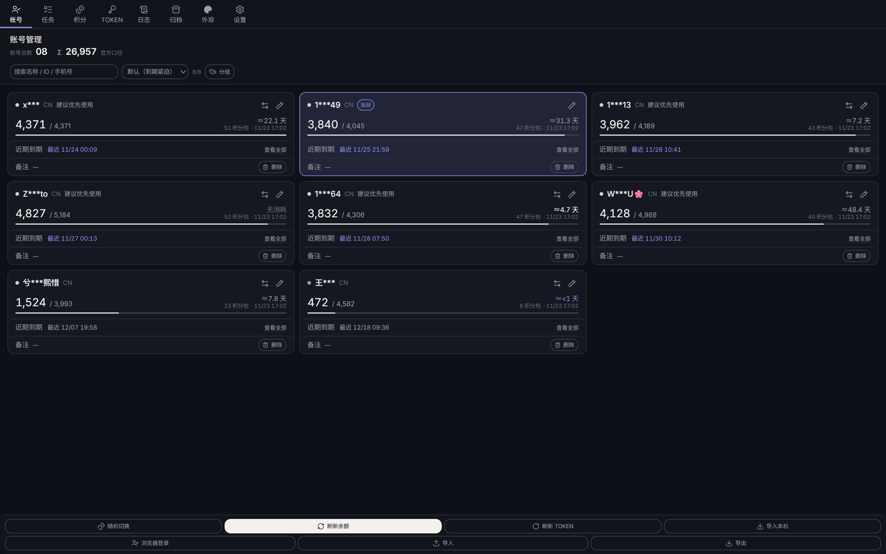

六个分区
每个分区只干一件事，数据来自同一份本地账号库。
| 编号 | 分区 | 解决的事 |
|---|---|---|
| 01 | 账号 | 扫码登录与导入导出，余额和积分包，剩余天数预测，健康点，限流标记，一键设为当前账号 |
| 02 | 任务 | 选账号后跑签到、成长任务、旅行或全套日常，实时进度，失败项单独重跑 |
| 03 | 积分 | 每日消耗与账号余额，模型、客户端、账号三个维度，官方用量优先，本地快照兜底 |
| 04 | TOKEN | 多数据源汇总，会话排行，调用明细，周与时的热力图，七日环比 |
| 05 | 日志 | 通知存档、自动日常、错误日志、切换台账四源合一，可按源清空 |
| 06 | 设置 | 数据目录与规模，四份 CSV 导出，限流自动切换，镜像前缀 |
会话只有一套，切到哪个账号都是这一套
注入是怎么接上的
没有调试端口就注入不了，所以启动器和注入器是同一个 exe。
-
step 1
校验客户端
安装向导和启动器都读注册表，确认官方客户端装在哪，路径可手改。
-
step 2
带端口拉起
客户端没开就以 --remote-debugging-port=9222 启动；已经在跑先提示关闭。
-
step 3
CDP 注入
连上页面，注册新文档自动注入，右下角出现图标，之后每秒探活、清掉就补。
-
step 4
面板接管
点图标弹出 iframe 面板，加载 127.0.0.1:17653，完整界面在客户端里跑。
同一份前端也直接开独立窗口，双屏或不想挡着聊天区时用。
切号不重启
写认证，把当前会话池整体划给新账号，页面自己刷新。内容是同一批，只改归属。
- 不复制、不删除，只改 user_id 归属，划归前整库备份
- 写完立刻探测，客户端没跟上新身份就自动回退重启路径
- 会删除目标账号会话的旧参数已在命令层禁死，来自两次真实的数据丢失事故
